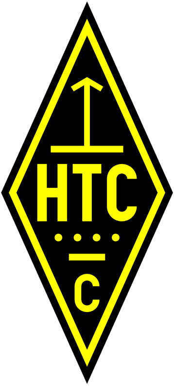

HTC: Helvetia
Telegraphy Club
This is a Swiss club for friends of
CW . We put the stations HB9HC and HB9HTC on the air regularly.
Special events:
* Morse Code training broadcasts:
Every Monday (except July and August), 19.00 UTC, 3.576, 45 - 140
cpm, duration 30 minutes. Afterwards short confirmation net for
casual contacts at any speed.
* HQX Morsetrainer -- a free program developed by HB9HQX to
assist in learning Morse Code. Download from the HTC website.
* Morse Code certificates and lapel pins -- with the HQX
program, in the comfort of your own home you can take an exam at
the speeds 80 - 100 - 120 cpm. If you pass, submit your test file
via e-mail -- and for a small charge you can receive a certificate
and/or lapel pin showing your proficiency at those speeds.
* National Mountain Day -- our "signature" contest -- 3rd
Sunday in July, 06.00 - 09.59 UTC, 80 meters, CW only. Location
must be in Switzerland, at least 800m ASL (QTH must be registered
in advance of the contest), maximum total weight (rig, batteries,
antenna, etc.) 6 kg, exchange includes a unique 15-character code
word for each QSO. A prize is also awarded to the home station
(including those outside Switzerland) with the most NMD QSOs.
Back to ECM listing
Back to EuCW Start Page